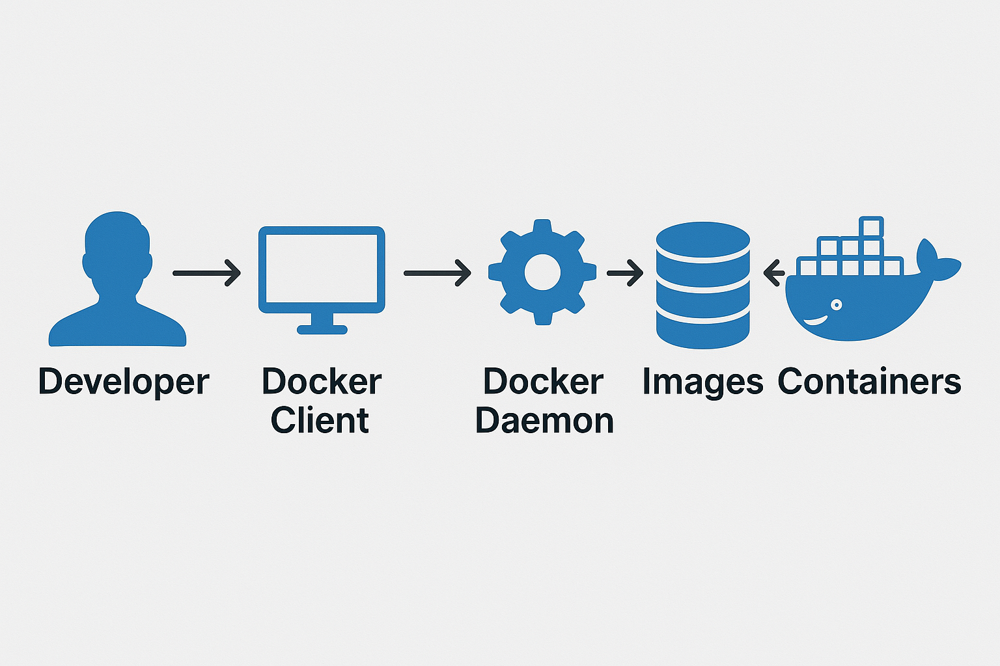

<!DOCTYPE html>
<html lang="en">
  <head>
    <meta charset="utf-8" />
    <meta name="viewport" content="width=device-width, initial-scale=1.0, maximum-scale=1.0, user-scalable=no" />

    <title></title>
    <link rel="stylesheet" href="dist/reveal.css" />
    <link rel="stylesheet" href="dist/theme/consult.css" id="theme" />
    <link rel="stylesheet" href="plugin/highlight/zenburn.css" />
	<link rel="stylesheet" href="css/layout.css" />
	<link rel="stylesheet" href="plugin/customcontrols/style.css">


    <script defer src="dist/fontawesome/all.min.js"></script>

	<script type="text/javascript">
		var forgetPop = true;
		function onPopState(event) {
			if(forgetPop){
				forgetPop = false;
			} else {
				parent.postMessage(event.target.location.href, "app://obsidian.md");
			}
        }
		window.onpopstate = onPopState;
		window.onmessage = event => {
			if(event.data == "reload"){
				window.document.location.reload();
			}
			forgetPop = true;
		}

		function fitElements(){
			const itemsToFit = document.getElementsByClassName('fitText');
			for (const item in itemsToFit) {
				if (Object.hasOwnProperty.call(itemsToFit, item)) {
					var element = itemsToFit[item];
					fitElement(element,1, 1000);
					element.classList.remove('fitText');
				}
			}
		}

		function fitElement(element, start, end){

			let size = (end + start) / 2;
			element.style.fontSize = `${size}px`;

			if(Math.abs(start - end) < 1){
				while(element.scrollHeight > element.offsetHeight){
					size--;
					element.style.fontSize = `${size}px`;
				}
				return;
			}

			if(element.scrollHeight > element.offsetHeight){
				fitElement(element, start, size);
			} else {
				fitElement(element, size, end);
			}		
		}


		document.onreadystatechange = () => {
			fitElements();
			if (document.readyState === 'complete') {
				if (window.location.href.indexOf("?export") != -1){
					parent.postMessage(event.target.location.href, "app://obsidian.md");
				}
				if (window.location.href.indexOf("print-pdf") != -1){
					let stateCheck = setInterval(() => {
						clearInterval(stateCheck);
						window.print();
					}, 250);
				}
			}
	};


        </script>
  </head>
  <body>
    <div class="reveal">
      <div class="slides"><section  data-markdown><script type="text/template"><!-- .slide: class="drop" -->
<div class="" style="position: absolute; left: 0px; top: 0px; height: 700px; width: 960px; min-height: 700px; display: flex; flex-direction: column; align-items: center; justify-content: center" absolute="true">

<style>
code {
	font-weight: bolder;
	color: green;
}

.code-wrapper {
	width: 600px !important
}
</style>

# Why Containerization? 

### The Theory

Notes:

- Welcome everyone. Introduce yourself briefly and your experience with containers/data engineering.
- Briefly mention the goal of this first module: to understand _why_ containers exist and the fundamental ideas behind them before we dive into hands-on practice.
- Encourage questions throughout.
</div></script></section><section  data-markdown><script type="text/template"><!-- .slide: class="drop" -->
<div class="" style="position: absolute; left: 0px; top: 0px; height: 700px; width: 960px; min-height: 700px; display: flex; flex-direction: column; align-items: center; justify-content: center" absolute="true">

## The Problem: "It Works On My Machine!" 🤷‍♀️🤷‍♂️


- **Scenario 1:** Dev environment != Test environment != Production environment.
- **Scenario 2:** App requires Python 3.9, but server has Python 3.7... and another app needs 3.7! (Dependency Hell)
- **Scenario 3:** Onboarding new team members takes days just setting up their machine.
- **Scenario 4:** Library updates break _everything_.

**Result:** Wasted time, deployment failures, inconsistencies, frustration.

**Notes:**

- Start with a relatable pain point. Ask the audience if they've experienced these issues. Share a brief personal anecdote if appropriate.
- Emphasize that these problems are common, especially as systems grow in complexity or teams get larger.
- This sets the stage for _why_ a solution like containerization is needed.
</div></script></section><section ><section data-markdown><script type="text/template"><!-- .slide: class="drop" -->
<div class="" style="position: absolute; left: 0px; top: 0px; height: 700px; width: 960px; min-height: 700px; display: flex; flex-direction: column; align-items: center; justify-content: center" absolute="true">

## The "Traditional" Solution: Virtual Machines (VMs)


- Emulates an entire hardware system.
- Each VM runs a full **Guest Operating System** on top of the Host OS.
- Provides strong isolation.

**BUT...**

- **Heavyweight:** Each VM needs GBs of disk space and significant RAM/CPU.
- **Slow Boot Times:** Starting a full OS takes minutes.
- **Resource Intensive:** Lower density - fewer apps per server compared to containers.

**Notes:**

- Explain what a VM is at a high level. Most will have some familiarity (VirtualBox, VMware).
- Use the diagram concept to visually show the layers involved.
- Focus on the _downsides_ in the context of solving the "works on my machine" problem efficiently – VMs solve isolation but introduce significant overhead.
</div></script></section><section data-markdown><script type="text/template"><!-- .slide: class="drop" data-auto-animate="true" -->
<div class="" style="position: absolute; left: 0px; top: 0px; height: 700px; width: 960px; min-height: 700px; display: flex; flex-direction: column; align-items: center; justify-content: center" absolute="true">

## A Better Way: Enter Containers! 🐳


- Package applications and their dependencies together.
- Run in **isolated environments** on a _shared_ operating system kernel.
- Think of them as "lightweight VMs" (but they aren't VMs!).

**Key Idea:** Isolate the _application and its environment_, not the entire OS.

**Notes:**

- Introduce containers as the evolution/alternative.
- Use the contrasting diagram concept to highlight the key difference: _sharing_ the Host OS kernel.
- Emphasize the concept of packaging the app _with_ its dependencies. This directly addresses the dependency hell problem.
</div></script></section><section data-markdown><script type="text/template"><!-- .slide: class="drop" data-auto-animate="true" -->
<div class="" style="position: absolute; left: 0px; top: 0px; height: 700px; width: 960px; min-height: 700px; display: flex; flex-direction: column; align-items: center; justify-content: center" absolute="true">

## VMs vs. Containers: The Showdown


| Feature       | Virtual Machines (VMs)          | Containers                  |
| :------------ | :------------------------------ | :-------------------------- |
| **Isolation** | Hardware Level (via Hypervisor) | OS Process Level            |
| **OS**        | Full Guest OS per VM            | Share Host OS Kernel        |
| **Size**      | Large (GBs)                     | Small (MBs)                 |
| **Boot Time** | Slow (Minutes)                  | Fast (Seconds/Milliseconds) |
| **Overhead**  | High                            | Low                         |
| **Density**   | Lower                           | Higher (more apps per host) |
| **Use Case**  | Full OS isolation needed        | Packaging & deploying apps  |

**Notes:**

- Directly compare the two technologies across key characteristics.
- Reiterate that containers are _not_ VMs, they solve similar problems differently.
- Highlight the Size, Boot Time, and Overhead differences as major advantages for containers in application deployment scenarios.
- Mention that VMs still have their place (e.g., running different OS types like Windows on Linux, stronger security boundaries).
</div></script></section></section><section  data-markdown><script type="text/template"><!-- .slide: class="drop" -->
<div class="" style="position: absolute; left: 0px; top: 0px; height: 700px; width: 960px; min-height: 700px; display: flex; flex-direction: column; align-items: center; justify-content: center" absolute="true">

## Core Concept #1: Images & Containers


- **Image:**
    - A read-only template/blueprint.
    - Contains the application code, libraries, dependencies, tools, and runtime.
    - Built in layers. Like a recipe.
- **Container:**
    - A runnable instance of an image.
    - It's the image brought to life! A running process (or processes).
    - Adds a thin writable layer on top of the image layers.
    - You can run many containers from the same image.

**Analogy:** Image is the recipe, Container is the actual cake you baked from it.

**Notes:**

- This is a fundamental distinction. Use the analogy to make it stick.
- Explain the layered nature of images briefly (we'll cover more in Dockerfiles) – it's key to efficiency.
- Emphasize the one-to-many relationship: one image blueprint can create many running container instances.
</div></script></section><section  data-markdown><script type="text/template"><!-- .slide: class="drop" -->
<div class="" style="position: absolute; left: 0px; top: 0px; height: 700px; width: 960px; min-height: 700px; display: flex; flex-direction: column; align-items: center; justify-content: center" absolute="true">

## Core Concept #2: Registries & Docker Engine




- **Registry:**
    - A place to store and distribute container images.
    - Like GitHub, but for images!
    - Public (Docker Hub) and Private (Azure Container Registry (ACR), AWS ECR, Google Artifact Registry, self-hosted).
- **Docker Engine:**
    - The underlying client-server technology that builds, runs, and manages containers.
        - **Docker Daemon (Server):** Listens for API requests, manages images, containers, networks, volumes.
        - **Docker Client:** The command-line tool (`docker`) or API users interact with. Talks to the Daemon.

**Notes:**

- Explain the role of the registry – how images are shared and obtained (`docker pull`). Mention Docker Hub as the default public one. Briefly mention private registries like ACR as that's relevant for the Azure module later.
- Describe the client-server architecture of Docker. Many users don't realize the `docker` command is just talking to a background service (the daemon). This explains how remote Docker management is possible.
</div></script></section><section  data-markdown><script type="text/template"><!-- .slide: class="drop" -->
<div class="" style="position: absolute; left: 0px; top: 0px; height: 700px; width: 960px; min-height: 700px; display: flex; flex-direction: column; align-items: center; justify-content: center" absolute="true">

## How Do Containers Isolate? (The Magic ✨)


Containers use built-in Linux Kernel features:

1. **Namespaces:** _Isolation_
    
    - Provide processes with their own view of the system (Process IDs, Network interfaces, Mount points, Users, etc.).
    - Makes a container _feel_ like it's its own OS, even though it's sharing the kernel.
    - Like putting blinders on a process.
2. **Control Groups (cgroups):** _Resource Limiting_
    
    - Limit and monitor how many resources (CPU, RAM, I/O) a container can use.
    - Prevents one container from hogging all system resources ("noisy neighbor" problem).

**Key Takeaway:** Containers leverage OS features for efficiency, unlike VMs which emulate hardware.

**Notes:**

- Keep this high-level. The goal is conceptual understanding, not deep kernel knowledge.
- Use the "blinders" analogy for namespaces – the process inside the container can only see what the namespace allows it to see.
- Explain cgroups as the mechanism for resource quotas – important for stable multi-tenant environments.
- Reiterate the efficiency gain: using existing OS features is much lighter than running a whole new OS.
</div></script></section><section  data-markdown><script type="text/template"><!-- .slide: class="drop" -->
<div class="" style="position: absolute; left: 0px; top: 0px; height: 700px; width: 960px; min-height: 700px; display: flex; flex-direction: column; align-items: center; justify-content: center" absolute="true">

## The Analogy: Shipping Containers 🚢


- Before standard containers: Loading cargo was slow, inefficient, risky (breakage, theft). Different shapes and sizes.
- After standard containers:
    - **Standardized:** Same size, same fittings.
    - **Portable:** Can move easily between ships, trains, trucks.
    - **Efficient:** Easy to stack, load, unload.
    - **Secure:** Sealed content.

**Software containers provide the same benefits for applications!**

**Notes:**

- This is a classic and effective analogy.
- Walk through the parallels:
    - Different cargo = Different applications/dependencies.
    - Standard container = Standard image format.
    - Ships/trains/trucks = Different environments (Dev, Test, Prod, Cloud, Laptop).
    - Easy loading/stacking = Easy deployment, scaling, orchestration.
- It helps solidify the "why" – standardization leads to massive efficiency gains in the ecosystem.
</div></script></section><section  data-markdown><script type="text/template"><!-- .slide: class="drop" -->
<div class="" style="position: absolute; left: 0px; top: 0px; height: 700px; width: 960px; min-height: 700px; display: flex; flex-direction: column; align-items: center; justify-content: center" absolute="true">

## Benefits of Containerization Summarized

- ✅ **Consistency:** Same environment everywhere (Dev, Test, Prod).
- ✅ **Portability:** Runs on any machine/cloud with a container engine.
- ✅ **Efficiency:** Lightweight, fast startup, less resource usage than VMs.
- ✅ **Scalability:** Easy to spin up/down multiple instances of an application.
- ✅ **Faster Development:** Quicker builds, simpler dependency management, faster onboarding.
- ✅ **Isolation:** Apps don't interfere with each other (mostly!).

**Especially relevant for us:** Managing complex Python environments, deploying data pipelines, APIs, ML models reliably.

Or AWR Websites ...

**Notes:**

- Summarize the key advantages discussed throughout the module.
- Relate these benefits back to the initial pain points.
- Specifically mention why this is useful for the target audience (data engineers) – reliable environments for complex tools (Spark, Airflow, databases, ML libraries) are crucial.
</div></script></section><section  data-markdown><script type="text/template"><!-- .slide: class="drop" -->
<div class="" style="position: absolute; left: 0px; top: 0px; height: 700px; width: 960px; min-height: 700px; display: flex; flex-direction: column; align-items: center; justify-content: center" absolute="true">

## Module 1 Recap & What's Next

- **We Learned:**
    
    - The problems containers solve ("Works on my machine", dependency hell).
    - How containers differ from VMs (shared kernel, lightweight).
    - Core concepts: Images, Containers, Registries, Docker Engine.
    - How isolation works (Namespaces, Cgroups).
    - The key benefits (Consistency, Portability, Efficiency...).
- **Next Up: Module 2 - Getting Hands-On!**
    
    - Installing Docker (if needed).
    - Running your first containers (`docker run`, `docker pull`).
    - Interacting with running containers.


**Any Questions on the Theory?**

**Notes:**

- Quickly recap the main takeaways from Module 1.
- Generate excitement for the next module where they get to actually _use_ Docker.
- Provide a clear transition point.
- Open the floor for any final questions specifically about the theory before moving on.
</div></script></section></div>
    </div>

    <script src="dist/reveal.js"></script>

    <script src="plugin/markdown/markdown.js"></script>
    <script src="plugin/highlight/highlight.js"></script>
    <script src="plugin/zoom/zoom.js"></script>
    <script src="plugin/notes/notes.js"></script>
    <script src="plugin/math/math.js"></script>
	<script src="plugin/mermaid/mermaid.js"></script>
	<script src="plugin/chart/chart.min.js"></script>
	<script src="plugin/chart/plugin.js"></script>
	<script src="plugin/customcontrols/plugin.js"></script>

    <script>
      function extend() {
        var target = {};
        for (var i = 0; i < arguments.length; i++) {
          var source = arguments[i];
          for (var key in source) {
            if (source.hasOwnProperty(key)) {
              target[key] = source[key];
            }
          }
        }
        return target;
      }

	  function isLight(color) {
		let hex = color.replace('#', '');

		// convert #fff => #ffffff
		if(hex.length == 3){
			hex = `${hex[0]}${hex[0]}${hex[1]}${hex[1]}${hex[2]}${hex[2]}`;
		}

		const c_r = parseInt(hex.substr(0, 2), 16);
		const c_g = parseInt(hex.substr(2, 2), 16);
		const c_b = parseInt(hex.substr(4, 2), 16);
		const brightness = ((c_r * 299) + (c_g * 587) + (c_b * 114)) / 1000;
		return brightness > 155;
	}

	var bgColor = getComputedStyle(document.documentElement).getPropertyValue('--r-background-color').trim();
	var isLight = isLight(bgColor);

	if(isLight){
		document.body.classList.add('has-light-background');
	} else {
		document.body.classList.add('has-dark-background');
	}

      // default options to init reveal.js
      var defaultOptions = {
        controls: true,
        progress: true,
        history: true,
        center: true,
        transition: 'default', // none/fade/slide/convex/concave/zoom
        plugins: [
          RevealMarkdown,
          RevealHighlight,
          RevealZoom,
          RevealNotes,
          RevealMath.MathJax3,
		  RevealMermaid,
		  RevealChart,
		  RevealCustomControls,
        ],


    	allottedTime: 120 * 1000,

		mathjax3: {
			mathjax: 'plugin/math/mathjax/tex-mml-chtml.js',
		},
		markdown: {
		  gfm: true,
		  mangle: true,
		  pedantic: false,
		  smartLists: false,
		  smartypants: false,
		},

		mermaid: {
			theme: isLight ? 'default' : 'dark',
		},

		customcontrols: {
			controls: [
			]
		},
      };

      // options from URL query string
      var queryOptions = Reveal().getQueryHash() || {};

      var options = extend(defaultOptions, {"width":960,"height":700,"margin":0.04,"maxScale":"2","controls":true,"progress":true,"slideNumber":false,"transition":"slide","transitionSpeed":"default"}, queryOptions);
    </script>

    <script>
      Reveal.initialize(options);
    </script>
  </body>

  <!-- created with Advanced Slides -->
</html>
